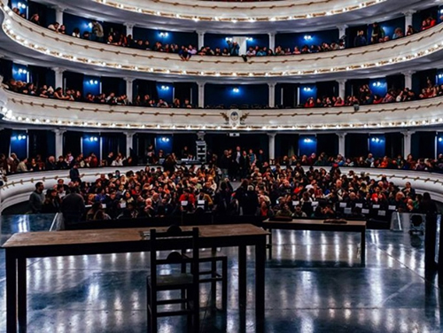

Real Chubut - Agencia de Noticias


Comenzó una maratón teatral que recorrerá toda la Argentina

Durante 53 días, 19 elencos recorrerán 16 provincias argentinas y realizarán un total de 160 funciones. Esta verdadera maratón se llama Circuito Teatral. Se inició en Morón, y terminará el 30 del mes próximo en la ciudad de Buenos Aires.
Organizado por el Instituto Nacional del Teatro, el Circuito tuvo su primera edición hace 10 años. Para tomar dimensión de todo esto, la última hizo circular a 76 espectáculos nacionales y 18 internacionales que realizaron 400 funciones. Congregó a 112.000 espectadores.
La nueva maratón tuvo su KM 0 en el Teatro Cervantes. Allí, Marcelo Allasino, director ejecutivo del INT, presentó a la nueva versión de esta fiesta en movimiento. “El Circuito es un logro de la institución que da trabajo a los artistas y técnicos. Como no estaba el catálogo en vigencia y no teníamos una convocatoria internacional, lo que hicimos fue apoyarnos en los ofrecimientos que tuvimos del Teatro Cervantes, por eso hay parte de su programación que integra el Circuito; de la Embajada de Francia, que presentará Les souffleurs commandos poétiques; y el jurado de clasificación que vio las obras que formaron parte de la última Fiesta Nacional del Teatro nos hizo una sugerencia de 12 montajes. Así conformamos la programación. Yo aspiro a que el año próximo podamos hacer el circuito con mayor apertura, con convocatoria internacional y que haya un jurado”, dice a la nacion.
En esta nueva edición se presentarán montajes dirigidos por María Marull, Claudio Hochman, Cristina Banegas, Javier Daulte, Matías Martínez y Gustavo Tarrío, entre otros; junto a espectáculos que llegan de ,
En las últimas semanas el INT también anunció una nueva línea de subsidios y becas para salas, artistas emergentes y para promover la circulación internacional. También debió toparse con cortocircuitos internos: recién el 16 del mes pasado volvió a sesionar el Consejo de Dirección. La última reunión del máximo nivel de conducción había sido el 30 de marzo dejando al INT en una “extrema fragilidad institucional”, según declaró el mismo Allasino en una comunicación oficial.
Con la mirada puesta en el futuro, el director ejecutivo del organismo de fomento considera que lo que más necesita el INT es la “renovación de miradas en algunas provincias”. En ese sentido, interpreta como una buena señal la incorporación a los comité de selección para los distintos concursos a gente de teatro que no había participado en la estructura del INT. “Se necesita diversidad de miradas. En provincias como Santa Fe y Mendoza eso no se da”, apunta luego de presentar al Circuito Teatral ante la prensa.
A lo largo de estos últimos meses el INT se topó con otros problemas. En abril, Allasino decidió cerrar la sede de la ciudad Santa Fe porque la consideró innecesaria. A los pocos días, ante diversos reclamos, se reabrió. En Córdoba, recientemente, salieron a luz “tensiones” o “diferencias de criterios”, así fue caracterizado el tema por unos y otros, entre la delegación provincial y la nacional. A este listado, Allasino suma a Mendoza como una de las provincias en la que hace falta sumar otras miradas. O sea que en tres de las provincias como mayor movimiento escénicos se dan situaciones de cierta tensión. ¿No es llamativo? “Lo reconozco -apunta-. De todos modos, son realidades diferentes. Córdoba, por ejemplo, es de los territorios provinciales que más ha crecido, Está atravesando un momento maravilloso y eso tiene que ver con la existencia de varios espacios participativos. Eso ha generado que haya más renovación de representantes provinciales que en Santa Fe y en Mendoza. La comunidad santafesina, soy de ahí, no está tan organizada, le faltan espacios de discusión. Creo que tuvo que ver con un modo de operar del INT que expulsó a lo divergente. Para una provincia con una enorme tradición teatral es simbólico que para el último concurso para designar al representante regional sólo se hay presentado una persona: Miguel Palma”.
Aclaración necesaria: Miguel Ángel Palma es una figura histórica del Instituto que, desde Santa Fe, generó todo un mapa de redes que fue definiendo la vida del INT a lo largo de estos años. Fue el creador del Circuito Teatral y, en estos momentos, es representante de su provincia. Durante la última década fue, alternativamente, aliado u opositor de los distintos directores ejecutivos.